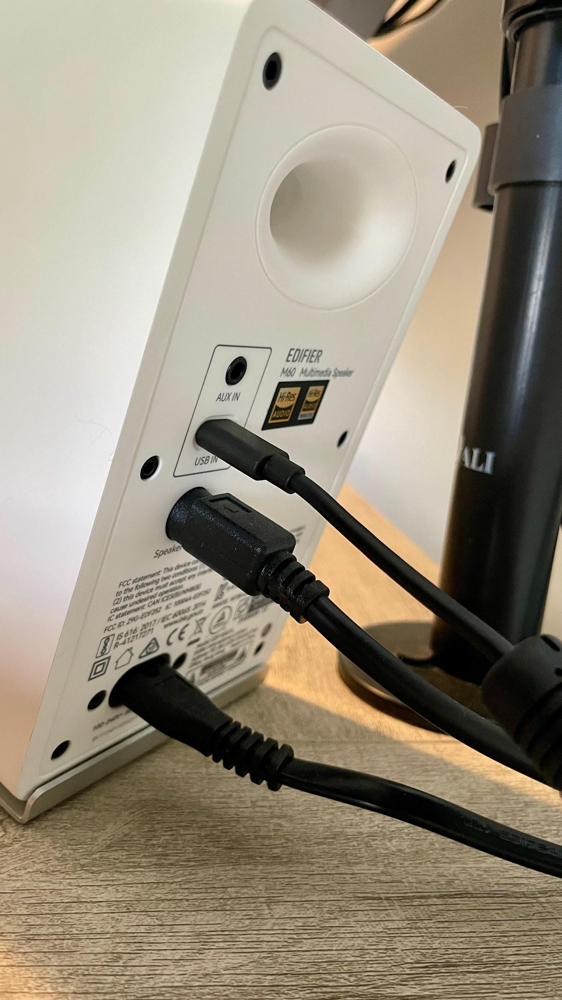
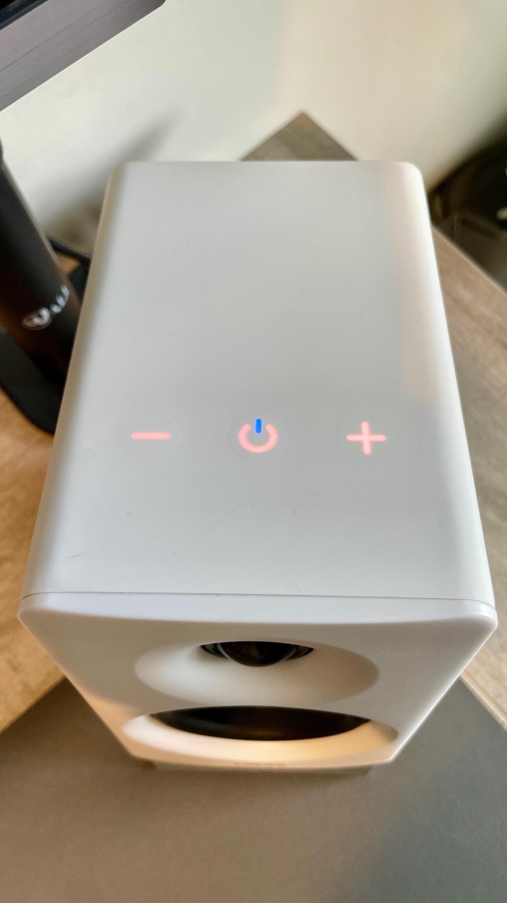
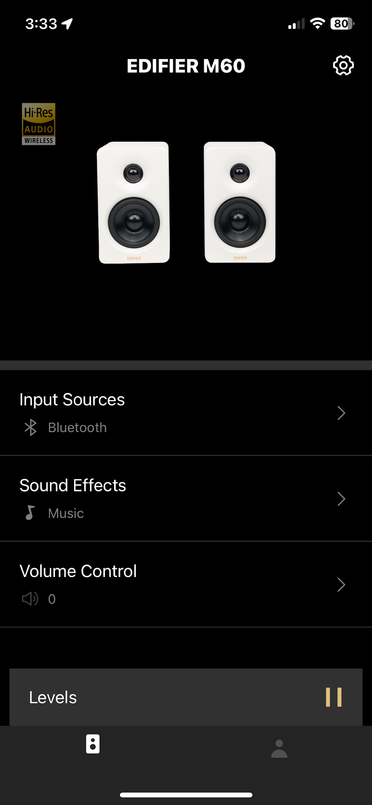
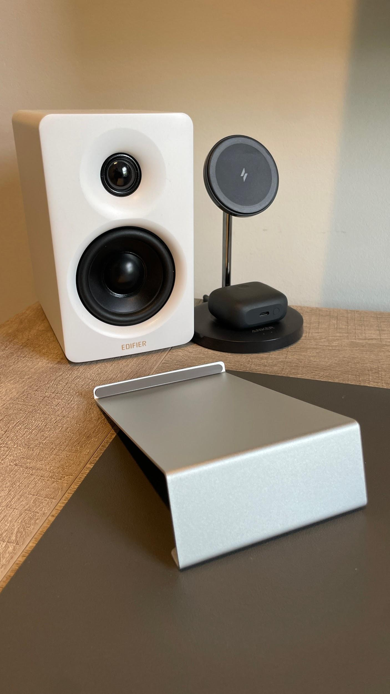

You can have a dialed-in keyboard, a clean monitor setup, and a workspace you actually enjoy sitting down at, but if your speakers sound like an afterthought, the whole experience takes a hit.
That's exactly where the Edifier M60s come in.
I've had these on my desk for a while now, and they've turned into one of those upgrades you stop noticing — not because they're forgettable, but because they just work. They sound good, they look right, and they don't demand attention to do either.
First Impressions: Clean, Minimal, Intentional
Right out of the box, the M60s lean into a modern, understated design. They don't scream for attention, but they absolutely elevate the look of a desk. Compact without feeling cheap, and just enough weight to let you know they're built with purpose.

They hit that sweet spot:
- Not bulky
- Not toy-like
- Just right for a clean, intentional setup
If you're someone who cares about how your desk looks as much as how it performs, these fit in effortlessly.

Sound Profile: Balanced with a Bit of Punch
Let's get to the part that actually matters.
For their size, these speakers punch above their weight. You're not getting room-shaking bass, but you're also not dealing with that thin, hollow sound most compact speakers fall into.
What Stands Out
- Clear mids and highs — vocals and dialogue come through crisp
- Capable low end — enough warmth to make music enjoyable
- No harshness at volume — they stay composed when pushed
On the rare occasion my computer reroutes audio back to the laptop speakers, I'm instantly reminded how good these are. The drop-off is brutal. What was full and rich becomes tinny and flat fast, the kind of sound that exists purely to check a box.
They're tuned in a way that works across everything:
- Background music while working
- YouTube and content consumption
- Casual gaming
They're not studio monitors, and they're not trying to be. They're built for real-world desk use, and they nail it.
Daily Use: Where They Shine
This is where the M60s really prove their value.
They're the kind of speakers you turn on in the morning and forget about. No constant tweaking, no fighting with settings. Just consistent, reliable audio.
They complete a desk setup that includes my Keychron K5 Max keyboard, creating a workspace that performs as well as it looks.

The interface is simple and clean, easy to access without pulling attention away from your setup. You also get app control when connected via Bluetooth through the Edifier ConneX app. From there, you can adjust built-in EQ profiles and run firmware updates, which is a solid bonus at this level.

A Few Things I've Appreciated
- They don't fatigue your ears during long sessions
- They fill a desk space without overpowering it
- They scale well with volume depending on what you're doing
For a daily driver setup, that matters more than chasing perfect specs.

Who These Are For
Let's be real — not everyone needs massive speakers or an audiophile setup.
The M60s are perfect if you:
- Want a clean, minimal desk aesthetic
- Need better-than-average sound without going overboard
- Spend a lot of time at your desk working, browsing, or creating
They're especially strong for anyone building a setup that balances function and visual appeal.
Where They Fall Short
No gear is perfect, and these aren't pretending to be.
- If you're chasing deep, rumbling bass, you'll want a subwoofer
- If you're doing critical audio work, look at studio monitors instead
- They prioritize balance over extremes
And honestly, that's by design.
The Edifier M60s aren't trying to be everything, and that's exactly why they work so well. They're built for real-world use. Clean design, solid performance, and the kind of consistency you actually notice over time. If your current speakers feel like an afterthought, this is one of those upgrades that quietly elevates your entire setup. Combined with solid peripherals like a quality keyboard, they help build a workspace you actually want to use.